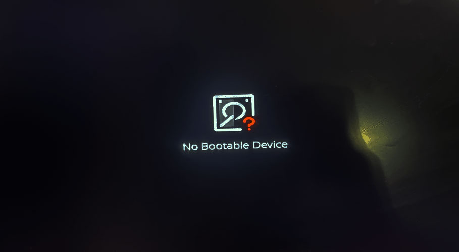
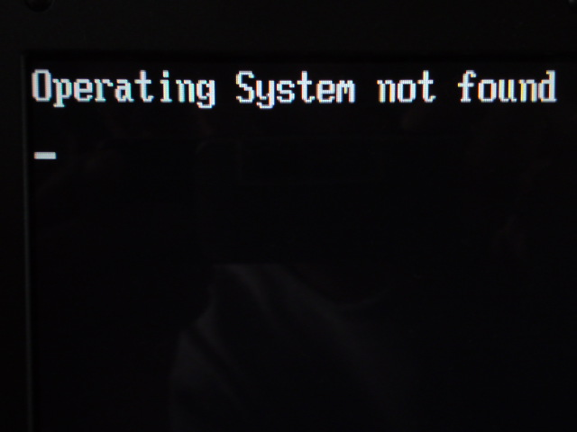
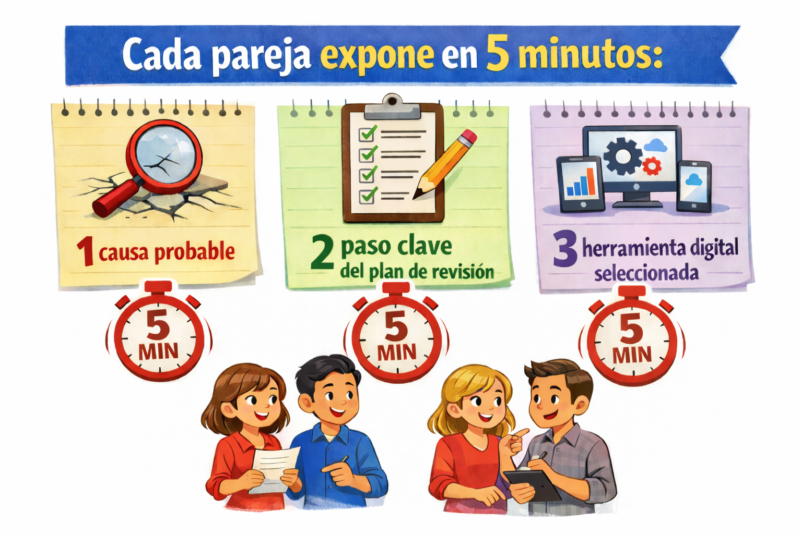

Guia 2 - Operar Herramientas Informaticas y Digitales
⏱60 horas📅2026🏫Jhon F. Kennedy | 10B
Guia 2 | Fase: Análisis
Operar herramientas informaticas y digitales
En esta guia diagnosticaras necesidades digitales reales, reconocerás herramientas TIC,
clasificarás archivos, compararás sistemas operativos y documentarás procedimientos
técnicos con criterio profesional.
🏛 SENA — Servicio Nacional de Aprendizaje
📍 Competencia: Operar herramientas informaticas y digitales
⏱ 60 horas
🎓 Código: 233108 · V1
Identificación de la Guía
📋
Datos del Programa de Formación
Información oficial del programa y la competencia
▾
Denominación del Programa
Sistemas Teleinformáticos
Código del Programa
233108 · Versión 1
Nombre del Proyecto Formativo
Alfabetización Digital, Asesoría Técnica y Ciberseguridad para la Mejora de Actividades Productivas Locales en la Zona de Influencia del CIAS.
Fase del Proyecto
Análisis
Actividad del Proyecto
Diagnosticar necesidades digitales, técnicas y de seguridad informática en actores productivos locales.
Competencia
220501121 - Operar herramientas informáticas y digitales de acuerdo con protocolos y manuales técnicos.
Resultado de Aprendizaje
RAP 01 - Caracterizar herramientas informáticas según contexto tecnológico de la organización.
Duración
60 Horas
Presentación
👋
Bienvenida a la Guía
Contexto, propósito y alcance de la Guía 2
▾
Ya conoces el entorno: sabes manejar un computador, has explorado internet y seguramente
has ayudado a alguien con un problema técnico. Esa experiencia previa no es casualidad:
es el punto de partida de esta guía. El RAP 01 te invita a transformar ese conocimiento
cotidiano en competencia profesional: aprenderás a caracterizar con criterio técnico
las herramientas informáticas y digitales que usan las instituciones educativas y los actores
productivos del Occidente de Boyacá, a identificar sus extensiones, requerimientos de hardware
y software, y a seleccionar la herramienta adecuada para cada necesidad real. No memorizarás
definiciones: las pondrás a trabajar desde la primera sesión, con casos reales del CIAS,
en equipo y con autonomía.
A lo largo de las 60 horas de esta guía construirás tu competencia de manera progresiva
y significativa: reflexionarás sobre situaciones concretas, profundizarás en los contenidos
con tus compañeros, practicarás en el laboratorio y, al final, aplicarás todo lo
aprendido diseñando una solución digital real para un actor productivo de tu comunidad.
Cada actividad está pensada para que crezcas no solo como técnico, sino como profesional
que escucha, analiza, propone y documenta. El Occidente de Boyacá necesita técnicos que
actúen con método y responsabilidad, y eso es exactamente lo que esta guía te forma
para ser.
"El Occidente de Boyacá necesita técnicos que actúen con método y responsabilidad."
Guía 2 - Operar herramientas informáticas y digitales
3.1 · Actividades de Reflexión Inicial
🧊 ACTIVIDADES PARA ROMPER EL HIELO:
Antes de entrar al caso técnico, estas dos actividades rápidas te ayudan a activar lo que ya sabes y conectar con tus compañeros. No hay respuestas incorrectas, hay puntos de partida diferentes.
💬
Actividades de Reflexión Inicial
3 actividades · Duración aproximada: 1 hora
▾
3.1.1ACTIVIDAD 1: 🧩 Sopa de LetrasMision de arranque▾
Realice la búsqueda en la siguiente sopa de letras, las palabras asociadas a los sistemas operativos y en específico a la temática de restauración y formateo.
3.1.2Actividad 2: 🧩 En la siguiente tabla, haga coincidir el nombre con su conceptoMision de arranque▾
En la siguiente tabla, haga coincidir el nombre con su concepto correspondiente.
3.1.3Situación problema (Verificación de operatividad tras ensamble de equipos nuevos)Mision de arranque▾
Situación problema
Verificación de operatividad tras ensamble de equipos nuevos.
En la sala de sistemas del CIAS llega una solicitud: la institución educativa aliada
del municipio acaba de recibir quince (15) computadores nuevos donados por el municipio.
Los ensamblan con cuidado. Los encienden. Y en la pantalla de varios equipos aparece
uno de estos mensajes de advertencia; exactamente lo que un técnico en sistemas
teleinformáticos debe saber resolver.
Una vez finalizado el ensamble, los equipos se encienden para verificar su funcionamiento.
Sin embargo, al iniciar, en la pantalla de varios equipos aparece uno de estos mensajes
de advertencia:

[ No Bootable Device ]

[ Operating System Not Found ]
Como técnico en sistemas teleinformáticos, debes verificar qué elementos o partes
del sistema están faltantes o no están instalados correctamente, y proponer las acciones
necesarias para asegurar la operatividad total de los equipos.
ACTIVIDAD (QUÉ DEBES HACER)
Trabajarás en equipo de máximo 3 personas para responder esta situación problema en 3 pasos.
Completen una Bitácora de diagnóstico inicial (en Word/Google Docs o a mano y luego digitada), registrando:
¿Qué pasa al encender cada equipo? (síntomas observables)
¿Qué mensaje aparece en pantalla?
¿Qué otras evidencias detectas? (luces, pitidos, ventilador, pantalla negra)
ANÁLISIS Y PROPUESTA (20-25 min)
En la misma bitácora, responde de manera argumentada:
Posibles causas (mínimo 3) que expliquen el fallo del arranque.
Plan de revisión ordenado (mínimo 5 pasos), priorizando acciones seguras antes que invasivas.
Herramientas digitales que usarías para documentar y entregar el caso (mínimo 3) y por qué. Ejemplo: Google Drive para guardar, Docs para redactar, Teams o correo para enviar.
Una acción que NO realizarías de inmediato y su justificación. Ejemplo: formatear sin respaldo previo.
3.SOCIALIZACIÓN (5 min por grupo).
Cada equipo presenta su diagnóstico y propuesta al grupo. El instructor consolida
los hallazgos en el tablero y conecta la situación con los contenidos de la sesión.
Toma nota de las ideas de los demás equipos: pueden ser mejores que las tuyas.

TIP PRO
Una bitácora de diagnóstico bien hecha es la diferencia entre un técnico que adivina y uno que analiza.
En el campo laboral, documentar un problema es tan importante como resolverlo.
3.2 · Contextualización e Identificación de Conocimientos
En esta actividad explorarás el panorama tecnológico del Magdalena Medio y el Occidente de Boyacá, identificarás las herramientas que ya existen en tu entorno y reconocerás cuáles son las necesidades reales de los actores productivos locales en materia de alfabetización digital. Al mismo tiempo, tus conocimientos previos serán el punto de partida.
🔍
Actividades de Contextualización e Identificación de Conocimientos
2 actividades · Duración aproximada: 6 horas
▾
3.2.1Cuestionario de conocimientos previosMision diagnostica▾
¿SABÍAS QUE...?
El sector productivo del Magdalena Medio usa a diario herramientas como Google Drive, WhatsApp Business, formularios de Google y correo electrónico, pero pocas personas saben cuál es la más adecuada para cada tarea.
Reconocer y clasificar herramientas es la primera competencia de un técnico en sistemas teleinformáticos del CIAS.
Responde de manera individual el cuestionario de conocimientos previos que te entregará el instructor. Este instrumento tiene 10 preguntas sobre herramientas TIC, suite ofimática y gestión de la información. No es una evaluación de calificación: es un diagnóstico para conocer tu punto de partida. Tómate 15 minutos para responderlo con honestidad.
Respaldo para clase
Si en clase no está disponible el servidor web local, responde este mismo cuestionario desde el siguiente Formulario de Google.
Usa esta opción cuando el instructor lo indique. Las respuestas enviadas por este medio se revisan directamente en Google Forms.
1. ¿Cuál de las siguientes opciones describe mejor qué es una herramienta TIC?
Un programa para jugar videojuegos en el computador.
Cualquier tecnología que permite crear, almacenar, transmitir o gestionar información.
Únicamente el hardware del computador (teclado, mouse, pantalla).
Solo las aplicaciones de redes sociales.
2. Relaciona cada herramienta con su función principal. Escribe el número en el espacio.
Herramienta
Respuesta
Google Drive
Microsoft Excel
Canva
WhatsApp Business
Funciones
1. Crear presentaciones visuales.
2. Almacenar y compartir archivos en la nube.
3. Organizar datos en tablas y hacer cálculos.
4. Comunicarse con clientes de un negocio.
3. Un tendero de Puerto Boyacá quiere llevar el control de sus ventas diarias en el computador. ¿Qué herramienta de la suite ofimática le recomendarías? ¿Por qué?
4. ¿Cuál de estas acciones NO es posible hacer con un procesador de texto como Microsoft Word o Writer de LibreOffice?
Escribir y formatear un documento con títulos y párrafos.
Insertar imágenes y tablas en un documento.
Crear una base de datos con miles de registros de clientes.
Revisar la ortografía y gramática de un texto.
5. Un docente quiere enviar el mismo mensaje a 30 estudiantes adjuntando un PDF. ¿Qué herramienta(s) usarías? Marca todas las que apliquen.
Herramienta
¿La usarías?
¿Por qué la usarías?
Correo electrónico (Gmail, Outlook)
Google Classroom o plataforma educativa
WhatsApp con lista de difusión
USB copiado uno por uno
6. ¿Qué significa "guardar en la nube"?
Explícalo con tus propias palabras como si se lo explicaras a un comerciante del mercado de Pauna que nunca ha usado internet.
7. Ordena los siguientes pasos para crear una copia de seguridad (backup). Escribe los números 1, 2, 3 y 4 en el orden correcto.
Paso
Orden
Verificar que el archivo se abrió correctamente en la ubicación de respaldo
Seleccionar el archivo que deseas respaldar
Copiar o subir el archivo a una memoria USB o servicio en la nube
Confirmar que el archivo original sigue disponible en su ubicación original
8. ¿Cuál de estas situaciones representa un problema de gestión de la información?
El computador se apagó por falta de energía eléctrica.
La impresora no tiene tinta.
Los archivos de ventas del último año están sin nombre, mezclados con fotos personales y sin carpetas organizadas.
El internet del municipio es lento.
9. De las siguientes herramientas digitales, ¿cuáles has usado alguna vez? Marca y escribe para qué la usaste.
Herramienta
¿La usarías?
¿Por qué la usarías?
Microsoft Word o Writer
Microsoft Excel o Calc
Google Drive
Correo electrónico
Zoom o Google Meet
10. Un emprendedor de Otanche guarda sus fotos, listas de precios y datos de clientes en una sola carpeta llamada "cosas" en el escritorio. ¿Qué le recomendarías para organizar mejor su información?
Describe al menos dos acciones concretas.
3.2.2Fichas de casos y Matriz de Diagnóstico DigitalMision diagnostica▾
El instructor presenta tres fichas de casos: "Tienda Don Ramiro en Puerto Boyacá", "Cultivo Familiar en Otanche" y "Emprendimiento de artesanías en Pauna". Cada ficha describe una situación real de un actor productivo con sus dificultades tecnológicas específicas. Lee con detenimiento la ficha que te asigne el instructor.
Forma un equipo de trabajo con tres compañeros a quienes se les asignaron las otras fichas. Presenten brevemente su caso al equipo (máximo 3 minutos cada uno) y respondan juntos:
¿Qué herramientas digitales tiene disponibles este actor?
¿Cuáles desconoce?
¿Cuáles necesitaría aprender a usar?
Tienda Don Ramiro en Puerto Boyacá
Lee la ficha asignada por el instructor y registra el diagnóstico digital del caso.
Cultivo Familiar en Otanche
Lee la ficha asignada por el instructor y registra el diagnóstico digital del caso.
Emprendimiento de artesanías en Pauna
Lee la ficha asignada por el instructor y registra el diagnóstico digital del caso.
Actor productivo
Herramientas que usa
Herramientas que desconoce
Herramientas recomendadas
Tienda Don Ramiro en Puerto Boyacá
Cultivo Familiar en Otanche
Emprendimiento de artesanías en Pauna
Socialización de la matriz
Cada equipo socializa su Matriz de Diagnóstico ante el grupo en no más de 5 minutos. El instructor consolida los hallazgos en un mapa digital en el tablero, que servirá como hilo conductor para todas las actividades posteriores de la guía.
Mapa de contenidos y cronograma
El instructor presenta el mapa de contenidos y el cronograma de trabajo de las 60 horas de formación, explicando cómo cada tema que estudiarás responde a una necesidad real identificada en los diagnósticos del paso anterior. Revisa el mapa y anota en tu cuaderno de aprendizaje tres compromisos personales para este proceso formativo.
📝 ¡RETO! Demuestra lo que sabes
Esa respuesta será tu punto de partida para la Misión Final de esta guía.
3.3 · Actividades de Apropiación
Aquí aprenderás haciendo: clasificarás archivos, sustentarás requerimientos técnicos y aplicarás herramientas ofimáticas y colaborativas en un caso real.
📚
Actividades de Apropiación
3 actividades · Duración aproximada: 18 horas
▾
3.3.1Caracterizacion tecnica de archivos y sistemas operativosMision tecnica▾
Importante
Solo se permite el uso e instalacion de herramientas licenciadas o de codigo abierto. Registra la fuente consultada para cada sistema operativo en la matriz.
Actividad 1: Extensiones de archivo
Completa el programa asociado, clasifica la extension y describe su uso principal o el riesgo que representa.
Extension
Programa / referencia
Descripcion o tipo de archivo
Recuerda
Agrupa las extensiones por categorias y señala cuáles representan riesgo de seguridad.
No abras archivos ejecutables o de origen desconocido sin verificar procedencia y necesidad.
Documenta ejemplos reales vistos en el explorador de archivos del sistema.
Actividad 2: Requerimientos minimos de sistemas operativos
Investiga procesador, RAM, espacio en disco y la fuente consultada para sustentar tu recomendacion técnica.
Sistema operativo
Procesador
RAM
Espacio en disco
Fuente
3.3.2Suite ofimatica en accion para un negocio realMision tecnica▾
Ahora vas a integrar Word, Excel, Drive y correo electrónico en un flujo de trabajo completo para uno de los actores productivos analizados.
3.3.3Herramientas colaborativas y comunicacion digital profesionalMision tecnica▾
La otra mitad de la competencia está en el trabajo colaborativo: comparar servicios, reunirte con tu equipo, compartir archivos y presentar evidencias de manera profesional.
Plataforma o ecosistema
Funcion principal
Ventaja clave
Limitacion o cuidado
Microsoft 365
Google Workspace
Herramientas independientes
3.4 · Actividades de Transferencia del Conocimiento
Esta actividad integradora consolida el diagnóstico, la investigación y la documentación técnica en un producto final organizado.
🚀
Actividades de Transferencia
2 actividades e informe · Duración aproximada: 32 horas
▾
3.4.1Guia de instalacion y evidencia tecnicaMision aplicada▾
Actividad 1: Guia de instalacion de sistemas operativos
Elabora una guia de instalacion paso a paso con capturas de pantalla y evidencias claras de cada fase.
Indicaciones esenciales
Parte A: instala Linux en VirtualBox con la distribucion asignada por tu instructor.
Evidencia la tabla de particiones requerida: /home, swap, /boot y /.
Parte B: instala Windows en VirtualBox con el sistema operativo designado por tu instructor.
Evidencia el manejo de particiones primaria, logica y extendida, segun corresponda.
En ambos casos toma capturas de configuracion, particionado, instalacion, primer inicio y verificacion.
Parte A: Linux en VirtualBox
Usa la distribucion asignada por tu instructor e incluye evidencia del particionado /home, swap, /boot y /.
Configure la maquina virtual de acuerdo con la practica asignada.
Documente el particionado requerido del sistema Linux.
Capture cada fase de la instalacion paso a paso.
Verifique y evidencie el primer inicio del sistema.
Parte B: Windows en VirtualBox
Evidencia el manejo de particiones primaria, logica y extendida segun corresponda para la practica asignada.
Configure la maquina virtual para la instalacion de Windows.
Documente el manejo de particiones y almacenamiento.
Capture la instalacion paso a paso.
Verifique el arranque y el funcionamiento del sistema.
Actividad 2: Desarrollo del taller complementario
Realiza las actividades relacionadas en el documento Taller 1_Guia5 complementarias a la guia de aprendizaje. Al finalizar, adjunta los resultados al documento de evidencia.
Instalador base para la practica
Abre el instalador de VirtualBox antes de iniciar la evidencia tecnica y usalo como apoyo para crear las maquinas virtuales de Linux y Windows.
Elabora un informe tecnico bajo normas IEEE que incluya todo el desarrollo del taller, es decir, las Actividades 1 y 2, con sus respectivas evidencias: capturas, tablas y respuestas.
Informe tecnico bajo normas IEEE
El informe final debe integrar el desarrollo de las Actividades 1 y 2 con sus respectivas evidencias: capturas, tablas, respuestas y conclusiones.
Antes de enviar
Verifica que respondiste todos los puntos solicitados.
Incluye capturas de pantalla claras y bien organizadas.
Cuida la ortografia y la redaccion tecnica del documento.
Revisa que el formato IEEE este completo.
Usa el nombre de archivo Guia5_Taller1_NombreAprendiz.doc.
Entrega el archivo final en el enlace dispuesto por tu instructor.
Nota importante
La estructura minima del documento debe incluir los siguientes apartados:
Abstract (resumen en ingles).
Keywords (palabras clave).
Introduccion: explica de que trata el documento.
Contenido: desarrollo de las actividades planteadas.
Conclusiones: explica que aprendiste en la practica.
Bibliografia presentada bajo normas IEEE.
Planteamiento de Evidencias de Aprendizaje
📊
Evidencias y Criterios de Evaluación
Resumen de lo que debe entregar y cómo será evaluado
▾
Fase del proyecto
Actividad del proyecto
Actividad de aprendizaje
Evidencias
Criterios de evaluacion
Tecnicas e instrumentos
Glosario de Términos
📖
Glosario de Términos
Definiciones clave para comprender la guía y sus actividades
▾
Referentes Bibliográficos
🔗
Referencias Bibliográficas
Fuentes consultadas para orientar esta guía y sus actividades
▾
Servicio Nacional de Aprendizaje (SENA). Guia de aprendizaje - Formato GFPI-F-135.
Oracle. Oracle VM VirtualBox User Manual.
VMware. Workstation / Player Documentation.
Microsoft. Documentacion oficial de instalacion y soporte de Windows 10 y Windows 11.